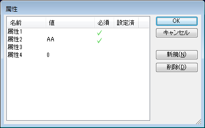

Evo.Shipでは各要素に対して、ユーザー定義属性を付加することができます。
ユーザー定義属性の定義ファイルを作成することで、各要素共通のフォーマットを使って属性を付加できます。
ドキュメントウィンドウまたはモデル構成ウィンドウでユーザー定義属性を付加したい要素を選択し（複数可）、コンテキストメニュー"ユーザー定義属性"を選択すると、属性編集ダイアログが表示されます。

属性名や値を入力しOKボタンで属性が付加されます。
属性定義ファイルで必須フラグが設定されているかどうかを表す列です。必須の属性値が入力されていない場合、OKボタンでエラーメッセージが表示されます。
属性ダイアログを表示したときに、既に要素に対して属性が設定されているかどうかを表します。チェックされていない場合は初期値が表示されています。また、複数選択で属性ダイアログを表示したときは、全ての要素が同じ属性値を持つかどうかを表します。
属性名や初期値、入力必須などの情報をCSVファイルに定義することができます。
CSVファイルは、「EvUserDefineProperties.csv」のファイル名で、設定ファイルフォルダ内に入れます。
CSVのフォーマットは、
"属性名","属性種別","初期値","列挙型の場合は列挙子..." と解釈されます。
属性種別(整数値)には以下のものがあります。
通常(必須でない)
必須属性
列挙型(必須でない)。後につづく列挙子のいずれかひとつをとる。
列挙型(必須)。後につづく列挙子のいずれかひとつをとる。